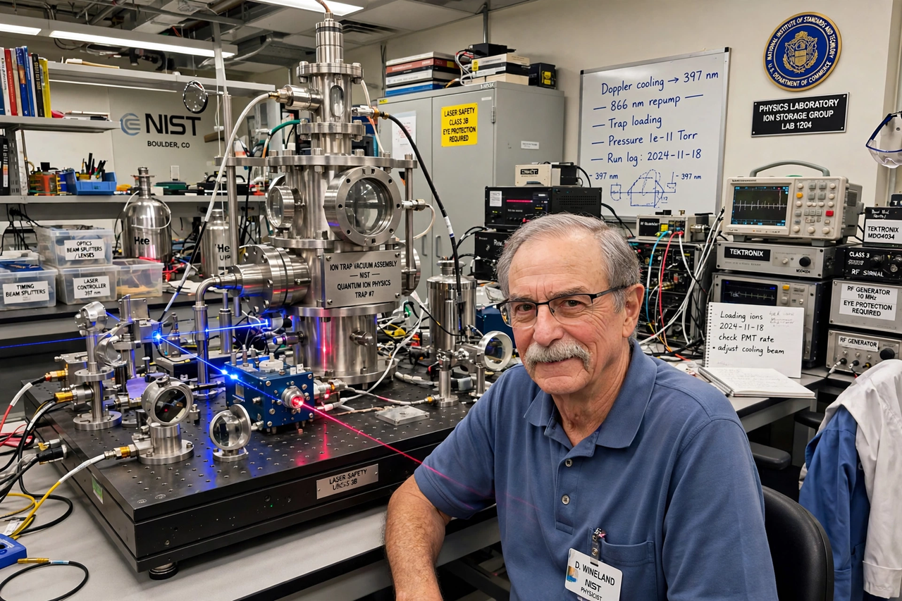

David Wineland
| Born | 24 February 1944, Wauwatosa, Wisconsin, US |
|---|---|
| Known for | Ion trap quantum computing, laser cooling, atomic clocks |
| Awards | Nobel Prize in Physics (2012, with Serge Haroche) |

[Image: Photograph of David Wineland in his NIST laboratory with ion trap equipment]David Jeffrey Wineland (born 24 February 1944) is an American physicist at the National Institute of Standards and Technology (NIST), where he led the Ion Storage Group. He shared the 2012 Nobel Prize in Physics with Serge Haroche 'for ground-breaking experimental methods that enable measuring and manipulation of individual quantum systems'.
Wineland's group laser-cooled trapped ions to their motional ground state (1978 onwards), built the first quantum logic gate between qubits (1995, the Cirac–Zoller controlled-NOT realised with a single beryllium ion), entangled ever larger ion registers, and constructed the world's most precise atomic clocks — aluminium-ion 'quantum logic' clocks accurate to about a second over the age of the universe. His methods made trapped ions one of the leading platforms for Quantum computing.
Career
Wineland studied at Berkeley (PhD Harvard, 1970) and has been at NIST Boulder since 1975. His Nobel recognised three decades of turning individual atoms into controllable quantum devices: sideband cooling, quantum state engineering of single particles, and spectroscopy that tests relativity and searches for varying constants — all experiments he designed to probe quantum mechanics at its most elementary level.